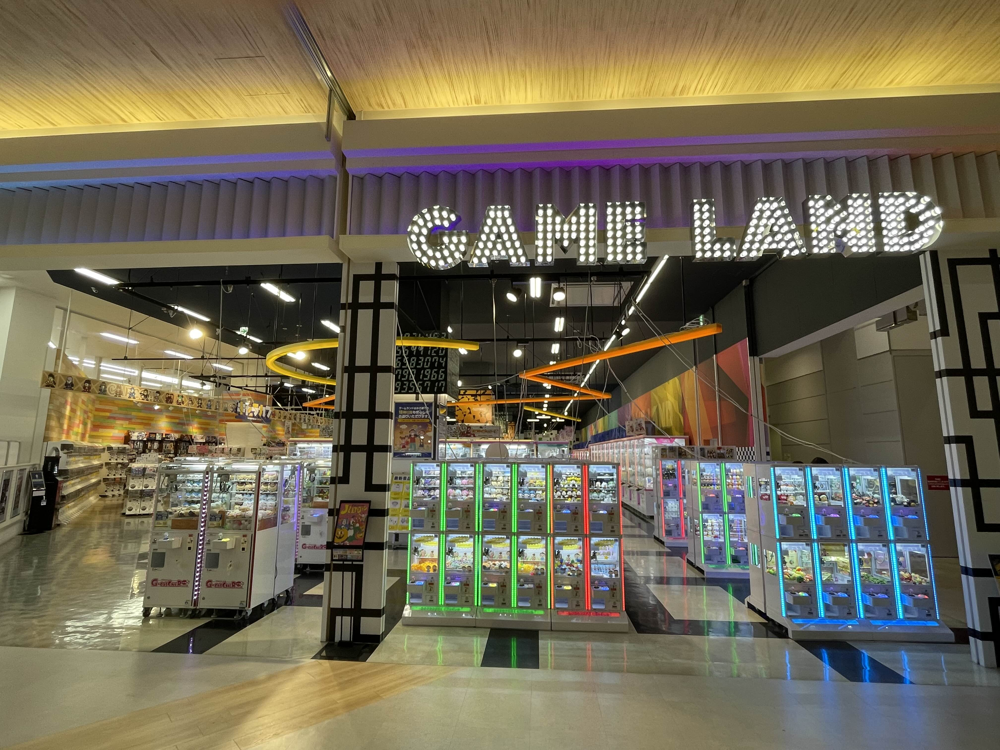
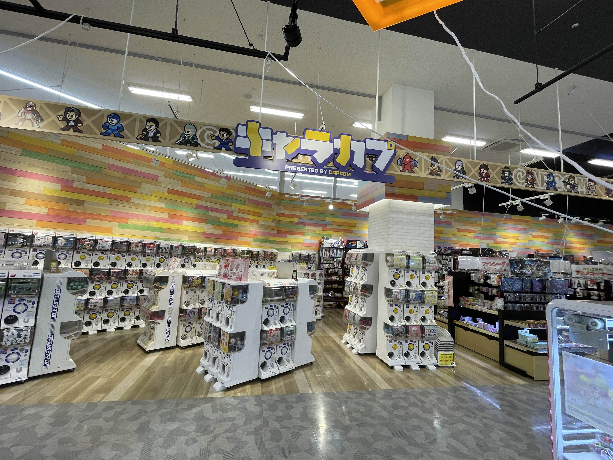
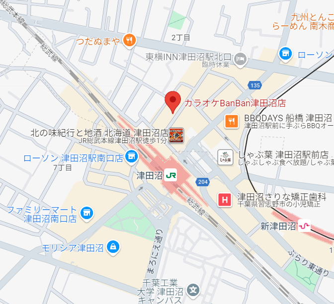
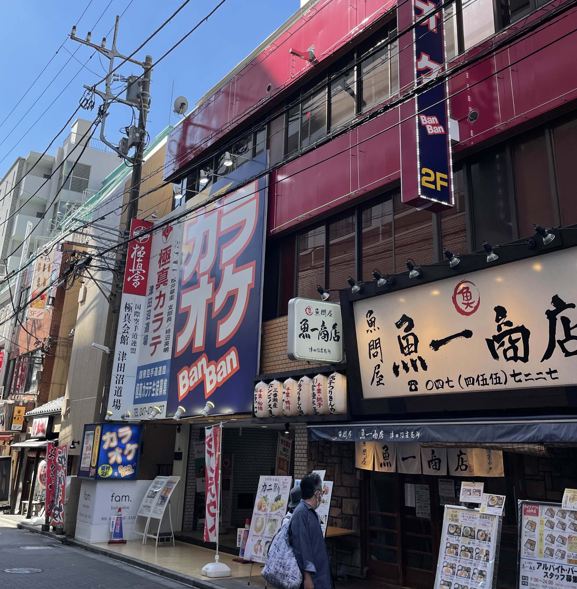
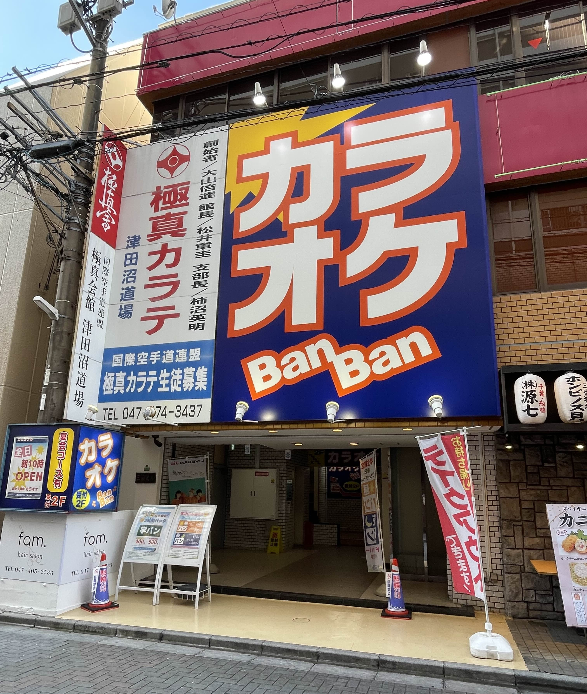
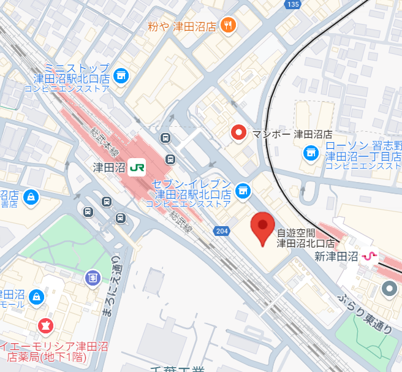
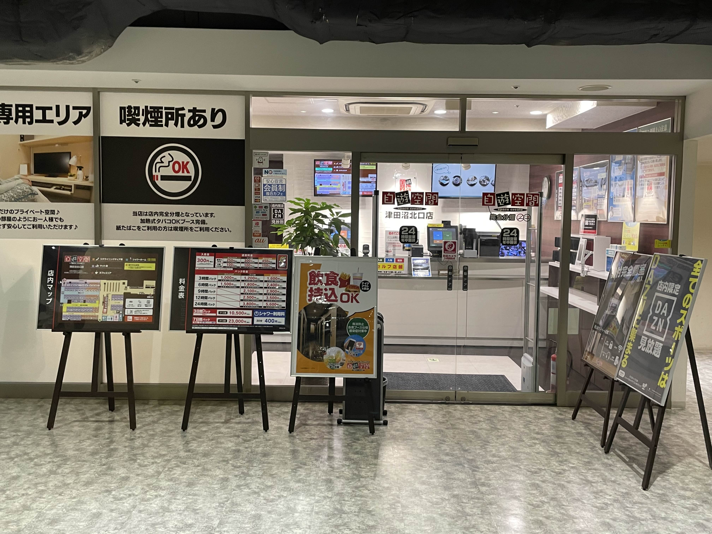

短時間滞在向けランキング
1位: ゲームランド 津田沼店
2位: カラオケBanBan津田沼店
3位: 自遊空間 津田沼北口店
紹介ポイント！
駅チカでふらっと寄って軽く時間つぶしできるような施設を紹介します。
-
1位: ゲームランド 津田沼店
ゲームランドはイオンモール津田沼の中にあるので他のショッピングや食事の合間に寄ることができます。数多くのクレーンゲームが並びさらには各ゲーム媒体も置かれています。
ゲームやアニメのグッズ販売も行っておりファンにとってはうれしいゲームセンターです。
店舗情報 最短費用 100円 最低滞在時間 3分 津田沼駅から 徒歩約７分 


-
2位: カラオケBanBan津田沼店
店舗情報 最低費用 90円 最短滞在時間 30分 津田沼駅から 徒歩約2分 


-
3位: 自遊空間 津田沼北口店
店舗情報 最低費用 250円 最短滞在時間 30分 津田沼駅から 徒歩約3分 

